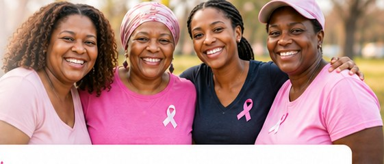
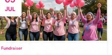
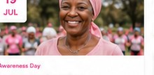

24MAY
24MAYWalk
Pink Walk for Hope
Join us in raising awareness and funds for cancer patients and their families.
Register NowJoin us at events that bring hope, raise awareness and support people affected by cancer across South Africa.

Join hundreds of supporters as we walk together for hope, healing and a future without cancer.
Showing 1–9 of 36 events
24MAYJoin us in raising awareness and funds for cancer patients and their families.
Register Now 08JUN
08JUNA safe space for caregivers to share experiences, find support and heal.
View Event 21JUN
21JUNLearn about early detection, prevention and lifestyle tips from experts.
Register Now
05JUL
19JULCelebrate strength, share stories and inspire hope in our survivor community.
Register NowMindfulness and wellness for patients and caregivers.
View Event